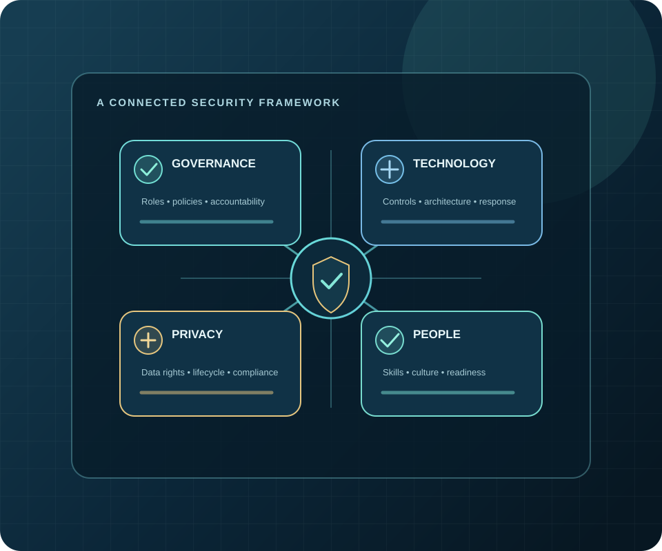

Focus Area 03 · Research Topic 03
Critical Infrastructure
Study the governance and cooperation needed to keep essential services secure, available and recoverable when disruption occurs.

Overview
Critical infrastructure includes the systems and services whose disruption can significantly affect public safety, economic activity or the functioning of society. Energy, telecommunications, healthcare, transport and water are examples of sectors where digital systems, operational technology and human processes are increasingly interdependent.
Resilience is broader than preventing every incident. It combines risk awareness, proportionate safeguards, prepared response, continuity of essential functions and learning that improves recovery. Effective approaches account for the distinctive safety and availability needs of operational environments.
Key research areas
- Cybersecurity governance, risk ownership and proportionate control frameworks.
- Operational technology security and dependencies between digital and physical systems.
- Third-party, software, equipment and supply-chain risk.
- Incident coordination, continuity planning, recovery and lessons learned.
- Public-private information sharing and cross-sector cooperation.
Challenges and risks
Legacy equipment, long service lifetimes and limited maintenance windows complicate upgrades. A compromise at a supplier or shared service can affect many operators at once. Safety, uptime and security teams may have different priorities, while limited incident visibility can delay coordinated action. Smaller operators may have fewer specialist resources, and response plans can fail if they are not exercised with relevant partners.
Legal and regulatory dimensions
Obligations vary by sector, operator and incident. In India, the Information Technology Act, 2000 and applicable directions and rules may be relevant; CERT-In’s 2022 directions address specified cybersecurity practices and incident reporting for covered entities. Sector-specific requirements and the role of designated authorities must be checked against current official materials. This overview does not determine an operator’s legal duties.
Practical applications
Operators can maintain an asset and dependency inventory, agree incident roles with suppliers, test restoration procedures and document decisions about safety and service continuity. Government institutions can clarify coordination channels and share timely, appropriately protected threat information. Exercises involving utilities, service providers and public authorities help reveal gaps before a real disruption.
Research questions
- How can operators prioritise cyber risks where patching or downtime may affect safety and availability?
- Which public-private arrangements support timely and trusted incident coordination?
- How do common suppliers and digital dependencies shape sector-wide resilience?
- What measures help determine whether continuity and recovery plans work in practice?
Related research areas
Continue exploring
Build resilience through informed governance.
Explore related work or contact the Unit to discuss a research enquiry.